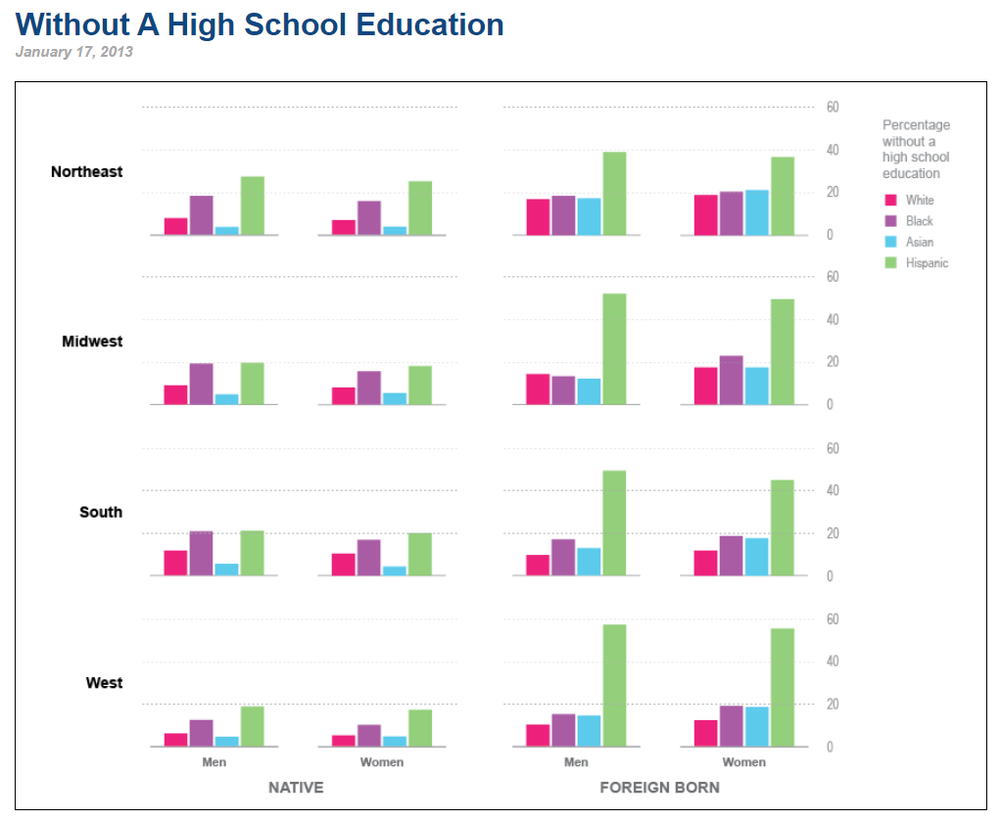

Original Visualization
Recently, during an informal conversation with my friend, we started talking about how so many people today have advanced degrees while about a decade ago even a Bachelors degree would be a luxury for most. I was curious to see if an advanced degree was actually as popular as we thought it was especially in the US, which inspired my data idea for this assignment. While looking at different articles and trends, I stumbled upon an article about people in the US above the age of 25 who do not have a high scool education. This piqued my interest since I have always viewed high school education as a necessity and hence wanted to dwelve deeper into it.

United Census Beureu
Critiquing the Original Visualization
Negatives:
My First thought when I looked at the graph was that there are so many charts. Roughly 16 bar charts. The title for the chart was also really vague. If it was'nt for the rest of the webpage, It would take me quite some time to figure out whats going on in the chart. Additionally, the numbers on the y axis of the graph are actually percentages and bar charts are not the best way to represent percentages, pie charts or tree maps represent percentages better. Finally, associating colours with the race was difficult and I had to keep referring to the legend to identify which colour was for whom. I would instead put the races under each bar so that the audience would not have to keep looking at the legend.
Positives:
There were some positives to this chart too. The chart portrays the distinction between national and foreign which is an important criterion for the audience to consider to identify if immigration laws should be taken into account while offering recommendations. The charts also provides a lot of insight about division of population by ethnicity, sex and region which can help organizations make informed decisions regarding next steps
Initial Sketches and Journaling
One of the major issues that stood out to me was bar charts being used to represent percentages. Hence my first step was to convert all bar charts to pie. I also reduced the overall charts from 16 to 8 by adding a gender filter as shown in my sketches. I also clearly mentioned the ethnicity on the pie eliminating the need for separate legends.

I then showed it to 2 of my friends and noted their responses. Summary of their responses can be seen below
Interview 1: CMU colleague who has worked as a Data Analyst for roughly 2 years
" From the title it seems like your pie charts show information about people with no higher education. Im guessing the intended audience would be gender/social sciences researchers. Your charts have 2 sections one showing foreign and the other showing Native. My assumption is that these terms refer to the birthplace but I think you should specify the same for more clarity. I can also see a filter so I think I can see this information for both males and females. Im not sure if surprising or not but in the first look I notice hispanics as majority within Foreign born individuals and Blacks as majority within native folks. I do find it confusing that you have so many pie charts though. Can you maybe group them further? It's quite cumbersome to go through so many pies. Maybe find a way to create a single pie and have more dropdowns like the one for male? "
Interview 2: Relative who has worked as an IT sales manager for roughly 25 years
" These look like pie graphs of people without high school education. The intended audience is journalists and professors who look into matters regarding inequality. A lot of companies also have a diversity section so this might be useful information for them to carry out probono initiatives. I dont find anything surprising as such but it is confusing since you have a lot of pie charts and it is very difficult to focus on one or gain any insight. Also would be good to include more background information especially since I do not have much context about it. I dont think it is necessary to have so many charts. Maybe show the information on a global level or something, that itself will reduce the graph to 2 from 8. Is there any logic behind the colours or are they random? It might be good to focus on just the maximum and grey out or lighten other values in a chart to increase focus. Also I dont clearly understand the story. Too much information to learn"
Intermediate revised sketch
Based on the initial feedback I decided to create 1 sunburst chart on Flourish since it incorporates both the interviews feedback on reducing the number of charts. As mentioned by Interviewee 1 I also clearly specified native born and foreign born to avoid confusion. I also like Interviewee 1's advice on creating more dropdowns to let the user decide on the story they wish to create. Hence I added one dropdown for gender and another for Native/Foreign born. This also addresses the second interviewees feedback on reducing information. I tried to create the graph nationally. But the presence of only percentages and not numbers makes this task dificult since we cannot simply add up percentages.
On showing this new design to the interviewees, they had a much more positive feedback as they could now focus on one chart entirely. However, on examining further Interviewee 1 raised a very good point about the aim of the chart being to compare Native and Foreign born individuals and hence having 2 charts side by side instead of 1 would be better. One very interesting insight provided by interviewee 1 was that it seemd like all 4 regions have equal population since they cover exactly 25% of the overall chart. This however is not the case since all numbers being percentages each region is entirely independent of the other in terms of numbers. She also recommended adding locations as a dropdown and all of this feedback was incorporated into my final visualization.
Final Visualization
Based on all the feedback I received I finally created this visualization in flourish that clearly distinguishes between Native as well as Foreign born individuals. Both these visuals can be seen side by side on a desktop view for better comparision. The user is free to define the location and gender within each graph thus making it easier to focus on one visualization at a time.